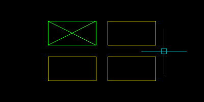

Add Objects to Block
This page is delivered for consistency purposes only, as part of the LeeMac sample module of DynALisp, which shows how DynALisp turns existing AutoLISP programs into a module. The program and its description are the work of Lee Mac, who keeps all the credit for them. The original page, with the latest version, is on Lee Mac's website: https://lee-mac.com/addobjectstoblock.html
| Function Syntax | LM-AddObjectsToBlock – original syntax: addtoblock (see aliases) |
| Current Version | 1.2 |
| Compatible with AutoCAD for Mac? | No |
| Compatible with AutoCAD LT? | Yes |
| Original Page | lee-mac.com/addobjectstoblock.html |
Program Description
This program enables the user to add a selection of objects to the definition of a selected block.
Upon issuing the command syntax addtoblock at the AutoCAD command line, the program prompts the user for a selection of objects residing on unlocked layers to be added to a chosen block definition.
Following a valid selection, the program prompts the user to select a reference of a block whose definition is to be modified to incorporate all objects in the selection. At this prompt, the program will permit selection of any standard (non-dynamic) uniformly scaled block reference which is not referenced within the selection (as a block reference cannot be added to its own definition).
Every object in the selection is then transformed relative to the position, scale, rotation, and orientation of the selected block reference, before being copied to the definition of the block and removed from the drawing.
Example of Usage

Bundled program notes
;;----------------------=={ Add Objects to Block }==--------------------;;
;; ;;
;; This program enables the user to add a selection of objects to the ;;
;; definition of a selected block. ;;
;; ;;
;; Upon issuing the command syntax 'addtoblock' at the AutoCAD ;;
;; command line, the program prompts the user for a selection of ;;
;; objects residing on unlocked layers to be added to a chosen block ;;
;; definition. ;;
;; ;;
;; Following a valid selection, the program prompts the user to select ;;
;; a reference of a block whose definition is to be modified to ;;
;; incorporate all objects in the selection. ;;
;; ;;
;; At this prompt, the program will permit selection of any standard ;;
;; (non-dynamic) uniformly scaled block reference which is not ;;
;; referenced within the selection (as a block reference cannot be ;;
;; added to its own definition). ;;
;; ;;
;; Every object in the selection will then be transformed relative to ;;
;; the position, scale, rotation, and orientation of the selected ;;
;; block reference, before being copied to the definition of the ;;
;; block and removed from the drawing. ;;
;;----------------------------------------------------------------------;;
;; Author: Lee Mac, Copyright © 2011 - www.lee-mac.com ;;
;;----------------------------------------------------------------------;;
;; Version 1.1 - 2011-05-31 ;;
;; ;;
;; - First release. ;;
;;----------------------------------------------------------------------;;
;; Version 1.2 - 2020-11-15 ;;
;; ;;
;; - Program completely rewritten to incorporate a check for ;;
;; references of the target block within the selected objects. ;;
;;----------------------------------------------------------------------;;
Command Names And Aliases
As in every DynALisp module, each program of this sample module has one main command, named LM-*, and the original command names of Lee Mac's page are kept as its aliases: they run the same command, and can be added, renamed or removed in Dyl-Suite (saved in Resources\Aliases.csv).
| Command | Aliases | Name |
|---|---|---|
| LM-AddObjectsToBlock | ADDTOBLOCK | Add Objects To Block |